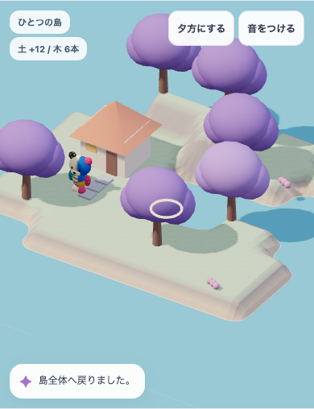
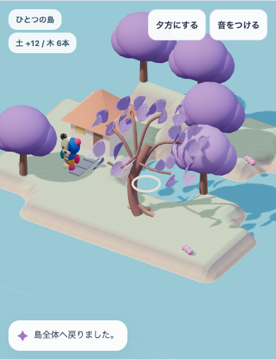
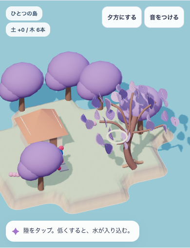
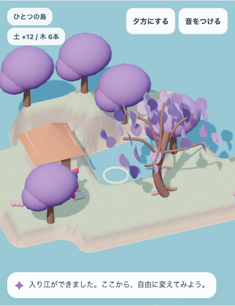
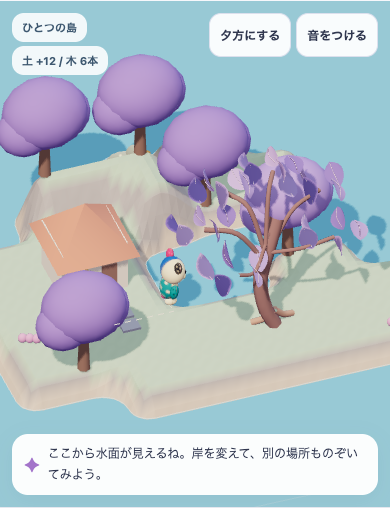

同じ入り江、同じ木6本。
枝の間から、水面が見える。
家1軒・木6本・土の正味増分12段。木の位置と地形、光、カメラを保ち、前景の既存1本だけを比較します。本体の所有・住人・保存とはつながっていない操作試作です。
全景：岸と水面の抜け


近景：同じ1本の造形を変える


編集した岸を、歩いてのぞく



動作の検査では、通常歩行中の接地・安全な足場と、reduced motion時の静止した到達結果を別に確認します。瞬間的な静止画だけを、歩行の証拠にはしません。
目標との差は残る

今回作ったのは一角の造形と操作のつながりです。大樹・回廊・水路・建築群と密度の構成には未到達。ほかの木と家は粗形のままで、美術採用・子どもの理解や再訪・本体への組込み・公開の合格ではありません。